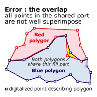
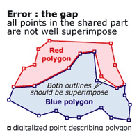
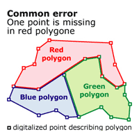
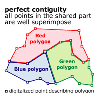

I - Cartogram creation
1 - The cartogram: a technical definition
Cartograms represent map feature surfaces in such a way, as to make them proportional to a given statistical variable. This representation method mostly derives from "classical" maps (i.e., maps representing ground topography) in the sense that the transformation can only be processed on an already given geometry. Topographical polygon layers are thus mostly used as a starting point for the production of any cartogram.
The goal of ScapeToad is to achieve this transformation while leaving intact the topological relations of polygon features.
2 - Cartogram creation process: what you need to start with
The Create Cartogram
button opens the Wizard.

In the first step, the wizard reminds you that two elements are necessary for cartogram creation: a polygon layer and a metric statistical variable defined for each polygon. (Metric variables are quantitative variables that allow for arithmetic operations, such as the calculation of sums, proportions or averages).
Both elements must be stored in a shapefile (i.e. an *.shp file with an associated *.shx index and a *.dbf data file).
i - Spatial coverage: the polygon layer
The second step of the wizard consists in selecting a polygon features layer to transform. All polygons must be closed
, i.e., constituted of a line which closes on itself.


Moreover, the polygon features layer must have the following 2 properties:
- a surface defined in metric units
- a clean topology
Topology quality is essential for transformation quality. For a polygon features layer, two types of contiguity errors must be avoided:
 |
Polygons must not overlap as is the case in the left-side figure. |
 |
There should be no gaps between polygons, except to describe real topological discontinuities, such as lakes or islands. The left-side figure illustrates an erroneous gap. |
 |
Thus, a The left-side figure illustrates a common error where duplication is imperfect, due to a form that does not immediately justify the presence of a point, as in the case for the red polygon, which does not have a point where at the red-green-blue intersection. |
 |
ScapeToad transformation preserves topology. It perfectly manages even complex entities such as archipelagos and enclaves/exclaves. Though ScapeToad does a preliminary automatic correction, starting off with an as clean initial layer as possible significantly improves transformation quality. Software for layer verification and correction is provided with most professional GIS and should be used before submitting your layer for transformation to ScapeToad. |
ii - A statistical variable
In the third step, the wizard asks you to select a metric variable linked to the layer (attribute data) that will become the new metric unit of the cartogram surface. Only a metric variable allows for the calculation of surface proportions between polygon areas.


Mass
A numeric variable can either represent a mass or a ratio. A mass (e.g. a population or a wealth) is measured or estimated over the whole surface of each polygon. A ratio can either be a mass/mass ratio, (such as a BNP per inhabitant) or a mass/surface ratio, in which case we speak of density (we have a ratio between a mass and the surface of the polygon to which this mass is attributed).
Density
Mass can be represented with a cartogram, as well as density, insofar as density is converted back to mass (i.e. multiplied by polygon surfaces). Please note that a mass/mass ratio, on the opposite, should not be represented in this manner, while it cannot be translated into a metric: the percentage of people in employment of a region composed of 3 sub-regions is neither the sum of the percentages of each sub-region, nor even their arithmetic average. Placing all 3 sub-regions in the same metric space would misleadingly suggest that such an addition is possible.
3 - Technically feasible... but wrong
It is technically feasible for ScapeToad to make a cartogram out of spatial data that do not follow the above guidelines. There is a significant risk, however, that the resulting cartogram will lead to mislading map interpretations.